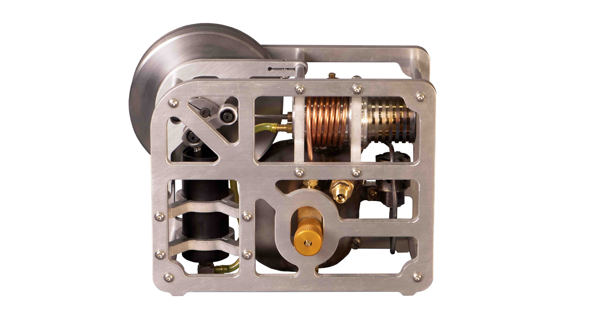
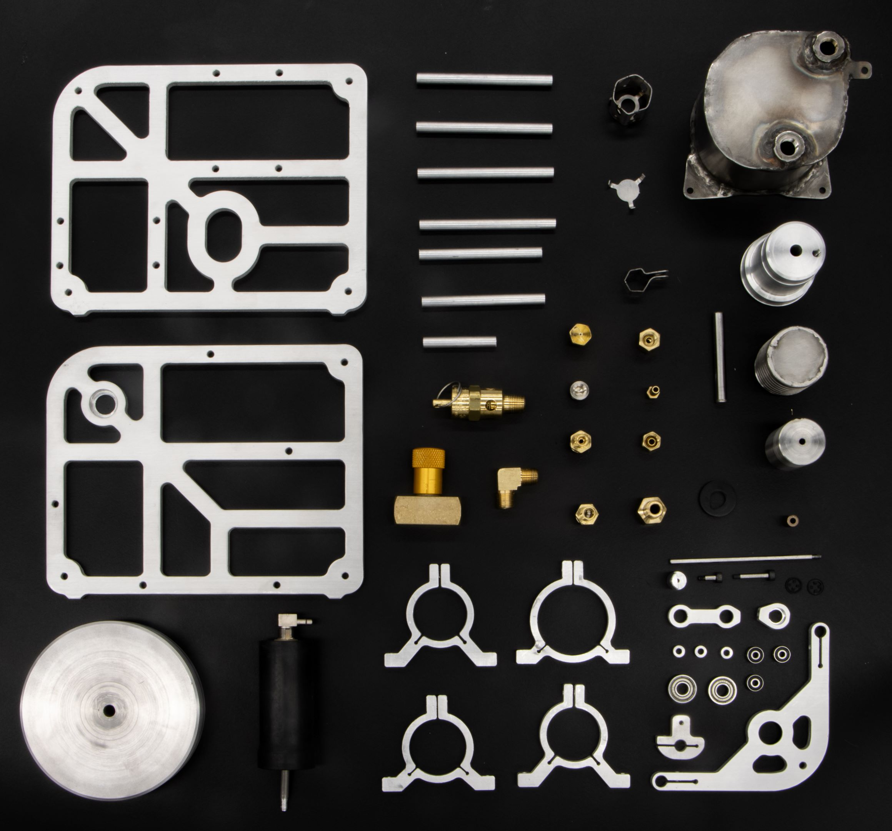
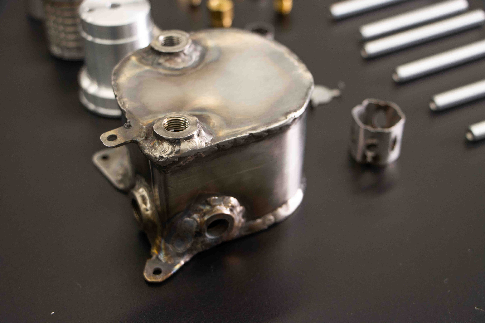
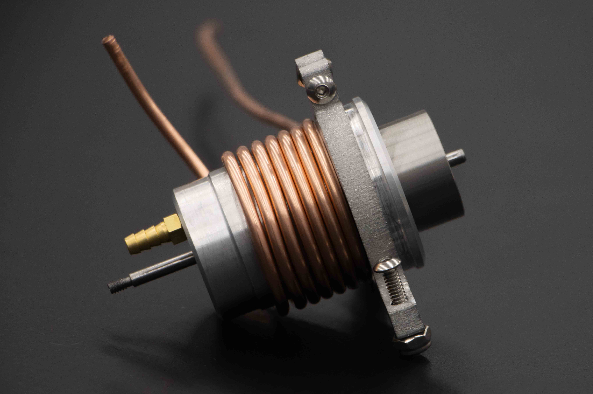
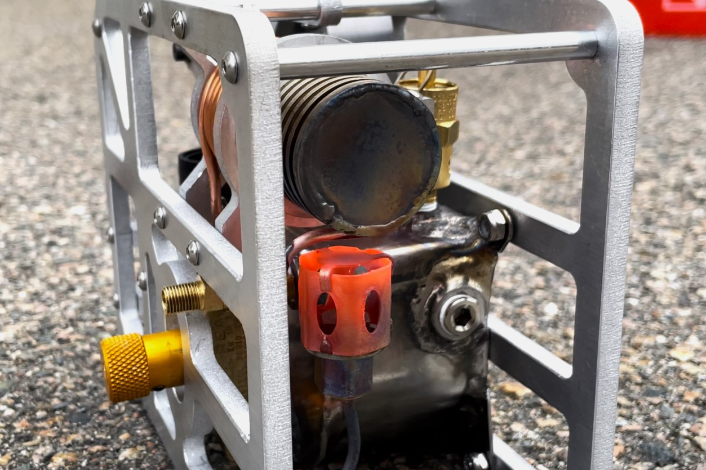

Model Rocket Avionics
A full-featured avionics suit developed for high-power model rockets
This gamma-type Stirling Engine was designed and built from scratch in 5 weeks on a $250 budget.
I took ownership of the design, implementation, and manufacturing of the engine and worked with an analyst to incorporate thermodynamic and physical requirements. Ultimately, this compact engine was able to run continuously under its own power!
The all-metal engine uses aluminum for the main structure and stainless steel for components that require high-temperature resistance. Where possible, the engine uses simple 2D parts that can be cut with a water jet and require minimal post-machining. Flexure clamps were used in multiple instances as a simple way to mount the various cylindrical components. In addition to water-jet cutting, I used manual milling, sheet-metal bending, lathe turning, single-point threading, and welding to manufacture the parts.
One major technical risk with the project was the pressurized alcohol burner built directly into the engine.
I made the air-tight fuel tank with bent and welded stainless steel. The ethanol fuel gets pressurized with a small volume of air, which forces it out of the tank through the throttle valve and into the copper vaporizer tube. The tube acts as a heat exchanger between the "cold-end" of the engine and the vaporizing fuel. This regenerative cooling effect boosts the engine performance (in theory).
The superheated gas is injected through a 0.5mm nozzle where it mixes and combusts with air in the burner. This heats the "hot-end" of the engine and warms the fuel tank which helps maintain tank pressure during sustained operation.
For safety, the tank has a 30psi Over-Pressure-Valve. I used FEA and hand calcs to validate the structural integrity of the tank at this operating pressure.
 Using camp-stove design best practices, the burner system worked on the first attempt despite the complex combustion physics involved. Judging by the bright orange color of the stainless steel burner, the flame is likely over 1000C!
A full-featured avionics suit developed for high-power model rockets

A custom dimable LED desk light

Meet my fleet of self-built multirotors